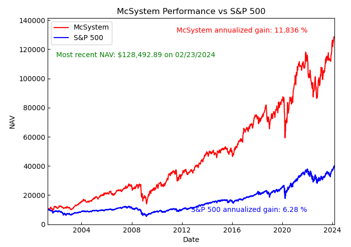

A stock screener that focuses on long term performance and fundamental analysis
For over 20 years I have been using a system to pick stocks based on
their long term price performance and fundamental financial data. Over
the years, this system has generated very satisfying results. Below is a
chart showing the actual net asset value (NAV) of a collection of stocks
chosen using this system:

It’s generally hard to beat the Standard & Poor’s 500 index return with any system. But this system’s total return over 20 years is almost a factor of 13, while the S&P 500 index increased by only a factor of 4 over the same period.
The basic philosophy of this system is that while the stock market is generally more or less a random walk, there are companies out there that are simply great companies, with good products and good management. Such companies on average grow steadily over a time, regardless of the daily up/down noise of the market. They don’t rocket up and then crash, but rather just keep on inching up year after year. In operating their business, they take reasonable risks, but do not overextend themselves with high debt. Importantly, for whatever reason, they haven’t been widely identified by other investors to the point where their stock price has already become inflated.
This philosophy is not rocket science, and has been embraced by the likes of Warren Buffet or The American Association of Individual Investors. The trick of course is in finding stocks that match these criteria among the 4000+ companies out there. That’s where this software comes in.
There is a lot of data out there on the internet. This software begins by downloading 10 years of monthly historical price data from finance.yahoo.com for all the stocks listed on the New York Stock Exchange and the NASDAQ (that have that much data). It’s also possible to choose a different time span, though it should be long in keeping with the philosophy. This usually results in about 1500 stocks. It also takes several hours, but fortunately it only needs to be done every 6 months or so, because we are looking for multi-year trends. Then a screen is done based on several measures of steady growth in stock price over this time period. These measures can be turned on or off, and their parameters can be adjusted. It’s quite possible to eliminate all stocks at this step, but the idea is to tweak the parameters until about 100 to 200 stocks remain.
The screening process then turns to fundamental analysis. Whether the price is reasonable is judged by the price to earnings ratio and the price to book ratio. Whether the business is fundamentally a good one is judged by the profit margin, the 5-year earnings-per-share growth, and the 5-year sales growth (again, looking for long term trends). Debt, measured by the current ratio and the debt-to-equity ratio, is used to judge how the company manages risk: some debt is good, to leverage growth, but too much is risky.